制动装置由线圈、弹簧、内刹车片、刹车盘、外刹车片组成，如下图。
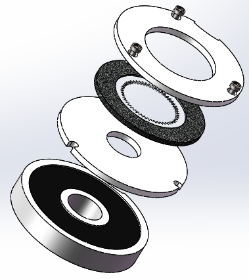
安装时先将弹簧和内刹车片装到线圈上，安装完成后将刹车盘放在其上（要点：必须居中放置），在螺丝孔上方放置好垫片，接着放置外刹车片并上紧螺丝 （使用英制大小为5/32的内六角）。
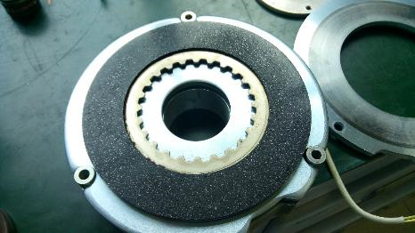
装配完成后，内刹车片与线圈的间隙约为0.15mm。
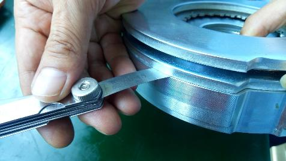
将油封装入电机外壳中（要点：可使用相同口径大小的工具将油封压入，注意不要 压坏油封，在安装时注意垂直安装并安装到底）。
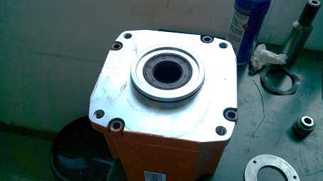
在将转子装入时需注意安全，因为其具有强大的吸力。
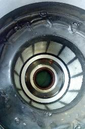 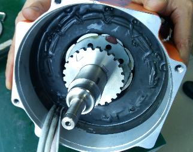
若发现制动装置不进的话，说明刹车盘未居中，须重新调整（无要点）
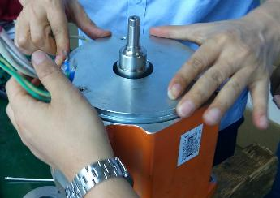
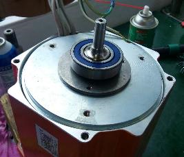
装入支撑架并将里面和外面的螺丝拧紧（要点：使用的工具是内六角，(连接制动 装置的三颗螺丝大小为5，连接轴承挡圈的三颗的大小为4，与外壳相连接的螺丝6）。
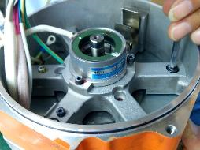 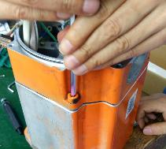
将编码器线圈装入后使用内六角（大小：2）把紧固螺丝拧紧。
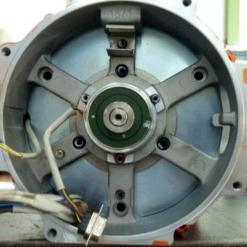
对原先 拆开的线进行连接，并注意完间保持相对绝缘性
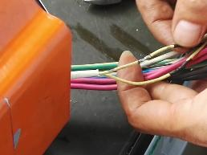
将连接轴装上之后使用内六角将螺丝拧紧（大小：6）
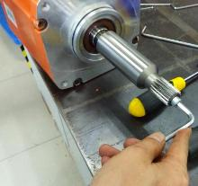